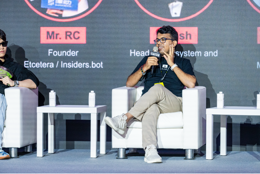

14
The Campfire Chat · September 2026
Community Call #14
Ideas. Updates. Community. Conversations.
Protocol
The September release
moipod v0.13.0, live on devnet on 11 September.
New capability
Fee delegation
- An interaction can name another account to pay its fuel
- Your app holds one funded account and names it as payer
- The payer signs each one, covers fuel only, and leaves no open tab
- So a new user, or an agent, can start with zero KMOI
Breaking
KMOI is capped
- It moved to MASN, the standard reserved for the fuel token
- Nobody can mint or burn it, not even the asset manager
- New asset id, so import KMOI_ASSET_ID
Breaking
Prices in anu
- One KMOI is a billion anu, and the network counts in whole anu
- Fuel starts at 50 anu; storage is a million anu per byte
- Convert with parseKmoi, never by hand
02
Action required
Upgrading from August
Install all three together. Older SDK builds know neither the new KMOI id nor the fee payer.
npm i js-moi-sdk@0.9.0-rc2 js-polo@0.1.5 · node: moipod v0.13.0
npm i js-moi-sdk@0.9.0-rc2 js-polo@0.1.5 · node: moipod v0.13.0
Numbers that moved
Ids, storage, fuel
- Hardcoded KMOI ids become KMOI_ASSET_ID; search for 0x108000004cd973c4
- Fixed storage amounts are a millionth of what they should be, so rewrite them with parseKmoi
- Fuel below 50 anu is refused, so leave fuel_price unset
Anything built by hand
Lists and assets
- Participant lists drop the sender and the fee payer, because the node reads both
- Keep the fee payer listed only as a notary, when it signs the operations
- Assets with a max supply of zero, or over 18 decimals, are refused
03
Developer relations
Meeting agents where they are.
In progress
MOI MCP server
Agents transact on MOI through MOI Wallet and WalletConnect. The server holds no keys.
Integration
MOI and x402
Wiring MOI into the x402 payment flow, where on-chain identity meets HTTP 402.
Content
The MOI blog
Protocol write-ups built to be found and cited, which is the same work the visibility numbers ask for.
04
AI visibility
How AI answers for us.
47 queries, tracked across 5 AI engines. This is the baseline we measure every month from here.
Visibility
17.3%
How often MOI shows up in the answers to those 47 queries.
Citations
1,203
Times our pages were cited as a source inside those answers, and still climbing.
Mentions
650
Times MOI was named in an answer, cited or not.
05
AI visibility · by engine
Where we show up
The number that matters is not the average. It is how consistently MOI appears across different systems.

20%
Perplexity

19.1%
Gemini

19%
Copilot

12.8%
ChatGPT
Gemini moved the most, up 12.8 points, while ChatGPT slipped 4.3. Coverage of the tracked set is strong: 221 of 226 responses, or 97.8%, so Claude is the room left to grow.
06
AI visibility · the questions
What people ask AI about MOI
The strongest tracked queries
Mostly first questions
- What is MOI Network?
- Is MOI a blockchain?
- What is the MOI Agent Launchpad?
- Is MOI compatible with other chains?
- How MOI Technology is perceived by visitors
What that tells us
They are working out what MOI is
People want to know what it is, how it works, and what they can build with it. Nobody is asking about the parts we discuss internally. The answers they get are written by whatever we have published, which makes this a content problem more than a product one.
07
What we do about it
Write for the questions already being asked
Core education
What MOI is
- What is MOI, and what is MOI Network
- Is MOI a blockchain
- How MOI works, and what makes it different
Product led
What you can build
- What the Agent Launchpad is, and how to create an agent
- Agent examples, SDK and developer guides
- Ecosystem integrations
Comparison
How we sit next to others
- MOI versus Lit Protocol
- MOI versus other agent and infrastructure protocols
- Interoperability and compatibility
08
Community
Game Nights are doing the work
Since the last call
120+ new Discord joins
- 60+ active members overall
- Game Nights are the biggest single contributor
- Members are joining from several regions
Game Night, seventh run
Participation doubled
- 42 people at peak, up from 20 last time
- Gartic was the format, played last Friday
- Poker next, run with another community
Pip, our AI bot
Live in Discord
- Ask it about MOI and the ecosystem
- Check your rank on the server
- Discord becomes something you use, not just read
Interactive formats are pulling more weight than content alone. That is the lesson we are acting on.
09
Events
We were at Futuremode, Taipei.
4 to 6 September, at the Taipei Expo Dome. A festival built around the convergence of AI, blockchain and emerging systems. We joined the Building AI-Native Crypto Products panel, and the people we met there are the ones we are now bringing onto these calls.
assets/futuremode-1.png
assets/futuremode-2.png

10
What is next
On the horizon
AI visibility
Raise the baseline
- Hold the Gemini gain, and improve coverage on Claude
- Authoritative pages for the questions people already ask
- Documentation an AI system can read and cite
- Turn ecosystem projects and integrations into searchable content
- Track the same 47 queries every month
Community and campaigns
Turn reach into activity
- Verify the campaign click-through and its attribution
- The next Game Night, run with another community
- Pip adoption inside Discord
- Short-form content from the Humanised podcast
- A discussion about bringing the University of Hong Kong onto MOI
11